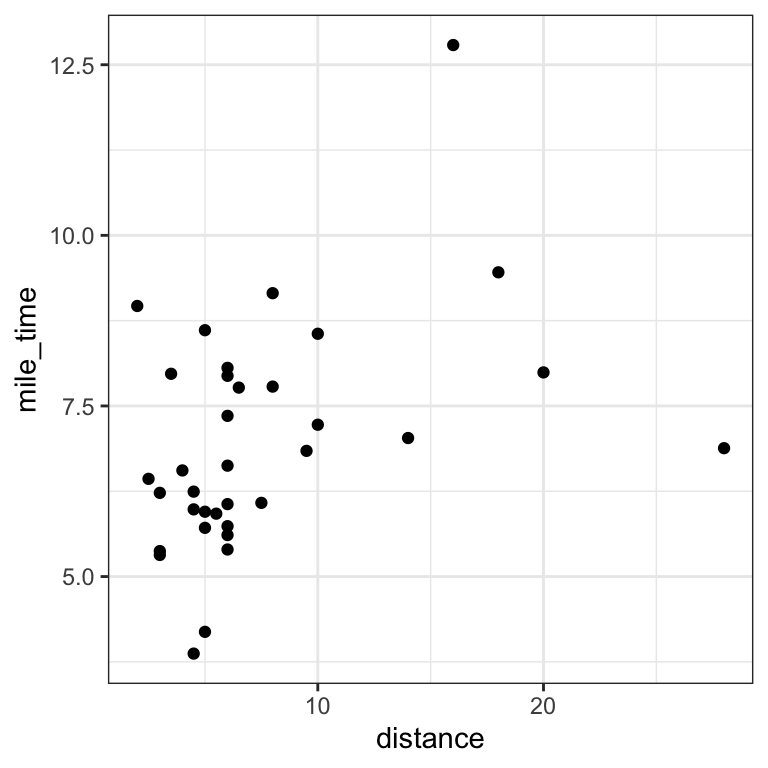
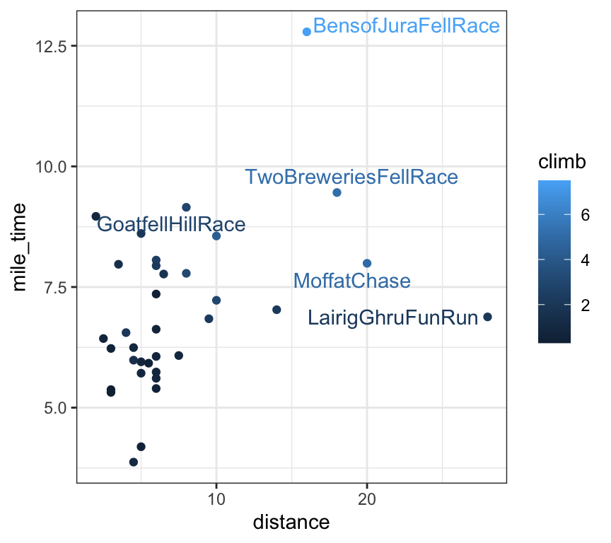

library(tidyverse) # for data import, manipulation, and plotting
library(GGally) # for ggpairs() function
library(ggrepel) # for geom_text_repel() function
library(car) # for vif() function
library(conflicted)
conflicts_prefer(dplyr::filter)6 R demo
See also Agresti 2.6, Dunn and Smyth 2.6
The R demo will be based on the ScotsRaces data from the Agresti textbook. Data description (quoted from the textbook):
“Each year the Scottish Hill Runners Association publishes a list of hill races in Scotland for the year. The table below shows data on the record time for some of the races (in minutes). Explanatory variables listed are the distance of the race (in miles) and the cumulative climb (in thousands of feet).”
We will also familiarize ourselves with several important functions from the tidyverse packages, including the ggplot2 package for data visualization and dplyr package for data manipulation.
# read the data into R
scots_races <- read_tsv("data/ScotsRaces.dat") # read_tsv from readr for data import
scots_races# A tibble: 35 × 4
race distance climb time
<chr> <dbl> <dbl> <dbl>
1 GreenmantleNewYearDash 2.5 0.65 16.1
2 Carnethy5HillRace 6 2.5 48.4
3 CraigDunainHillRace 6 0.9 33.6
4 BenRhaHillRace 7.5 0.8 45.6
5 BenLomondHillRace 8 3.07 62.3
6 GoatfellHillRace 8 2.87 73.2
7 BensofJuraFellRace 16 7.5 205.
8 CairnpappleHillRace 6 0.8 36.4
9 ScoltyHillRace 5 0.8 29.8
10 TraprainLawRace 6 0.65 39.8
# ℹ 25 more rows6.1 Exploration
Before modeling our data, let’s first explore it.
# pairs plot
# Q: What are the typical ranges of the variables?
# Q: What are the relationships among the variables?
scots_races |>
select(-race) |> # select() from dplyr for selecting columns
ggpairs() # ggpairs() from GGally to create pairs plot# mile time versus distance
# Q: How does mile time vary with distance?
# Q: What races deviate from this trend?
# Q: How does climb play into it?
# add mile time variable to scots_races
scots_races <- scots_races |>
mutate(mile_time = time / distance) # mutate() from dplyr to add column# plot mile time versus distance
scots_races |>
ggplot(aes(x = distance, y = mile_time)) +
geom_point()
# add climb information as point color
scots_races |>
ggplot(aes(x = distance, y = mile_time, colour = climb)) +
geom_point()# highlight extreme points
scots_races_extreme <- scots_races |>
filter(distance > 15 | mile_time > 9) # filter() from dplyr to subset rows
# plot mile time versus distance
scots_races |>
ggplot(aes(x = distance, y = mile_time, label = race, colour = climb)) +
geom_point() +
geom_text_repel(aes(label = race), data = scots_races_extreme)
# clean up plot
scots_races |>
ggplot(aes(x = distance, y = mile_time, label = race, color = climb)) +
geom_point() +
geom_text_repel(aes(label = race), data = scots_races_extreme) +
labs(
x = "Distance (miles)",
y = "Mile Time (minutes per mile)",
color = "Climb\n(thousands of ft)"
)6.2 Linear model coefficient interpretation
Let’s fit some linear models and interpret the coefficients.
# Q: What is the effect of an extra mile of distance on time?
lm_fit <- lm(time ~ distance + climb, data = scots_races)
coef(lm_fit)(Intercept) distance climb
-13.108551 6.350955 11.780133 # Linear model with interaction
# Q: What is the effect of an extra mile of distance on time
# for a run with low climb?
# Q: What is the effect of an extra mile of distance on time
# for a run with high climb?
lm_fit_int <- lm(time ~ distance * climb, data = scots_races)
coef(lm_fit_int) (Intercept) distance climb distance:climb
-0.7671925 4.9622542 3.7132519 0.6598256 scots_races |>
summarise(min_climb = min(climb), max_climb = max(climb))# A tibble: 1 × 2
min_climb max_climb
<dbl> <dbl>
1 0.3 7.5Let’s take a look at the regression summary for lm_fit:
lm_fit <- lm(time ~ distance + climb, data = scots_races)
summary(lm_fit)
Call:
lm(formula = time ~ distance + climb, data = scots_races)
Residuals:
Min 1Q Median 3Q Max
-16.654 -4.842 1.110 4.667 27.762
Coefficients:
Estimate Std. Error t value Pr(>|t|)
(Intercept) -13.1086 2.5608 -5.119 1.41e-05 ***
distance 6.3510 0.3578 17.751 < 2e-16 ***
climb 11.7801 1.2206 9.651 5.37e-11 ***
---
Signif. codes: 0 '***' 0.001 '**' 0.01 '*' 0.05 '.' 0.1 ' ' 1
Residual standard error: 8.734 on 32 degrees of freedom
Multiple R-squared: 0.9717, Adjusted R-squared: 0.97
F-statistic: 549.9 on 2 and 32 DF, p-value: < 2.2e-16We get a coefficient of 6.35 with standard error 0.36 for distance, where the standard error is an estimate of the quantity (5.5).
6.3 \(R^2\) and sum-of-squared decompositions.
We can extract the \(R^2\) from this fit by reading it off from the bottom of the summary, or by typing
summary(lm_fit)$r.squared[1] 0.971725We can construct sum-of-squares decompositions (4.1) using the anova function. This function takes as arguments the partial model and the full model. For example, consider the partial model time ~ distance.
lm_fit_partial <- lm(time ~ distance, data = scots_races)
anova(lm_fit_partial, lm_fit)Analysis of Variance Table
Model 1: time ~ distance
Model 2: time ~ distance + climb
Res.Df RSS Df Sum of Sq F Pr(>F)
1 33 9546.9
2 32 2441.3 1 7105.6 93.14 5.369e-11 ***
---
Signif. codes: 0 '***' 0.001 '**' 0.01 '*' 0.05 '.' 0.1 ' ' 1We find that adding the predictor climb reduces the RSS by 7106, from 9547 to 2441. As another example, we can compute the \(R^2\) by comparing the full model with the null model:
lm_fit_null <- lm(time ~ 1, data = scots_races)
anova(lm_fit_null, lm_fit)Analysis of Variance Table
Model 1: time ~ 1
Model 2: time ~ distance + climb
Res.Df RSS Df Sum of Sq F Pr(>F)
1 34 86340
2 32 2441 2 83899 549.87 < 2.2e-16 ***
---
Signif. codes: 0 '***' 0.001 '**' 0.01 '*' 0.05 '.' 0.1 ' ' 1Therefore, the \(R^2\) is 83899/86340 = 0.972, consistent with the above regression summary.
6.4 Adjustment and collinearity.
We can also test the adjustment formula (5.4) numerically. Let’s consider the coefficient of distance in the regression time ~ distance + climb. We can obtain this coefficient by first regressing climb out of distance and time:
lm_dist_on_climb <- lm(distance ~ climb, data = scots_races)
lm_time_on_climb <- lm(time ~ climb, data = scots_races)
scots_races_resid <- tibble(
dist_residuals = residuals(lm_dist_on_climb),
time_residuals = residuals(lm_time_on_climb)
)
lm_adjusted <- lm(time_residuals ~ dist_residuals - 1,
data = scots_races_resid
)
summary(lm_adjusted)
Call:
lm(formula = time_residuals ~ dist_residuals - 1, data = scots_races_resid)
Residuals:
Min 1Q Median 3Q Max
-16.654 -4.842 1.110 4.667 27.762
Coefficients:
Estimate Std. Error t value Pr(>|t|)
dist_residuals 6.3510 0.3471 18.3 <2e-16 ***
---
Signif. codes: 0 '***' 0.001 '**' 0.01 '*' 0.05 '.' 0.1 ' ' 1
Residual standard error: 8.474 on 34 degrees of freedom
Multiple R-squared: 0.9078, Adjusted R-squared: 0.9051
F-statistic: 334.8 on 1 and 34 DF, p-value: < 2.2e-16We find a coefficient of 6.35 with standard error 0.35, which matches that obtained in the original regression.
We can get the partial correlation between distance and time by taking the empirical correlation between the residuals. We can compare this quantity to the usual correlation.
scots_races_resid |>
summarise(cor(dist_residuals, time_residuals)) |>
pull()[1] 0.9527881scots_races |>
summarise(cor(distance, time)) |>
pull()[1] 0.9430944In this case, the two correlation quantities are similar.
To obtain the variance inflation factors defined in equation (5.6), we can use the vif function from the car package:
vif(lm_fit)distance climb
1.740812 1.740812 Why are these two VIF values the same?